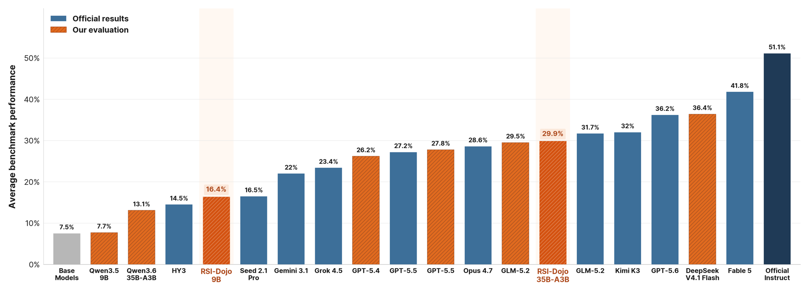
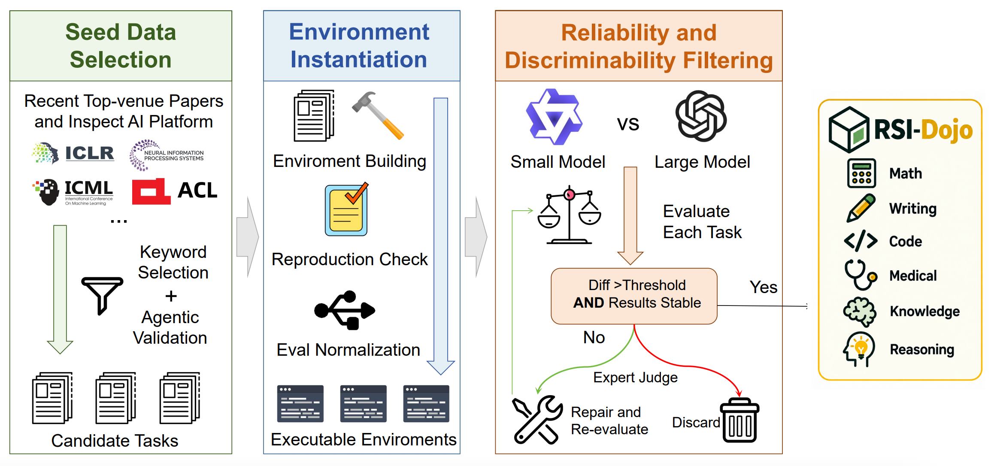
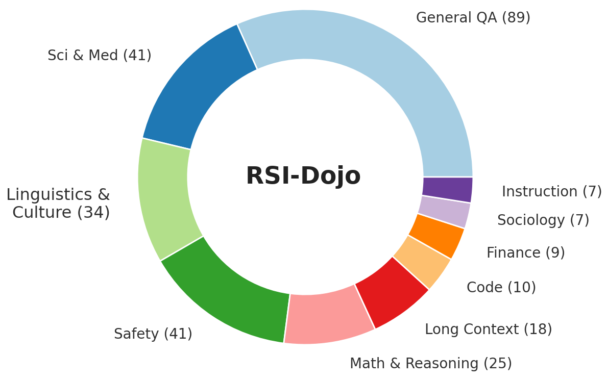
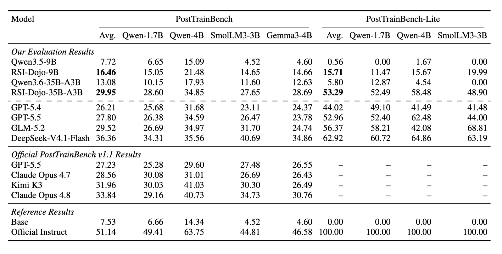
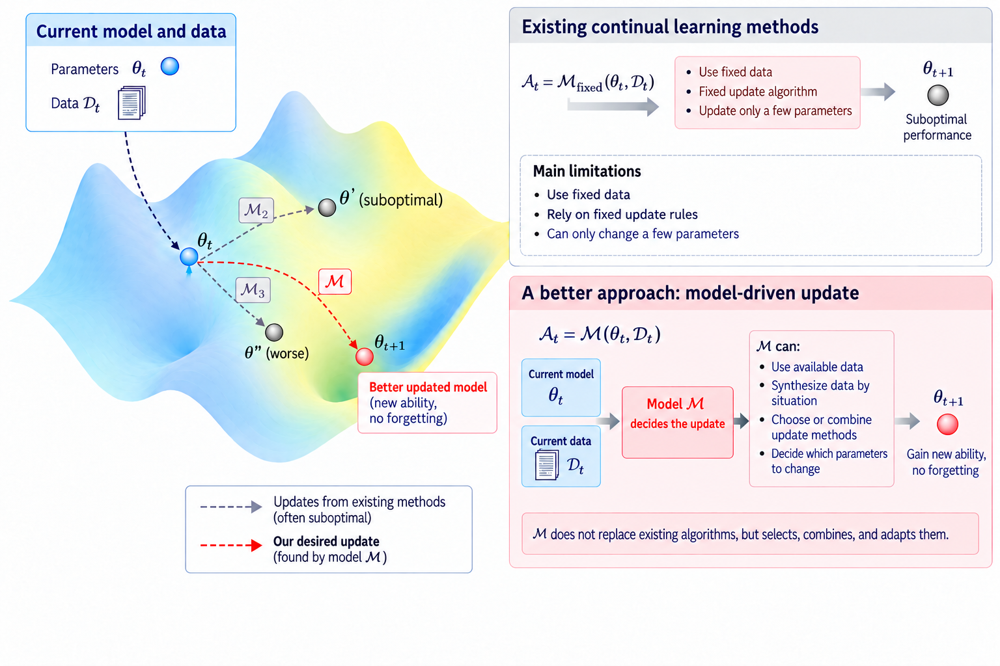
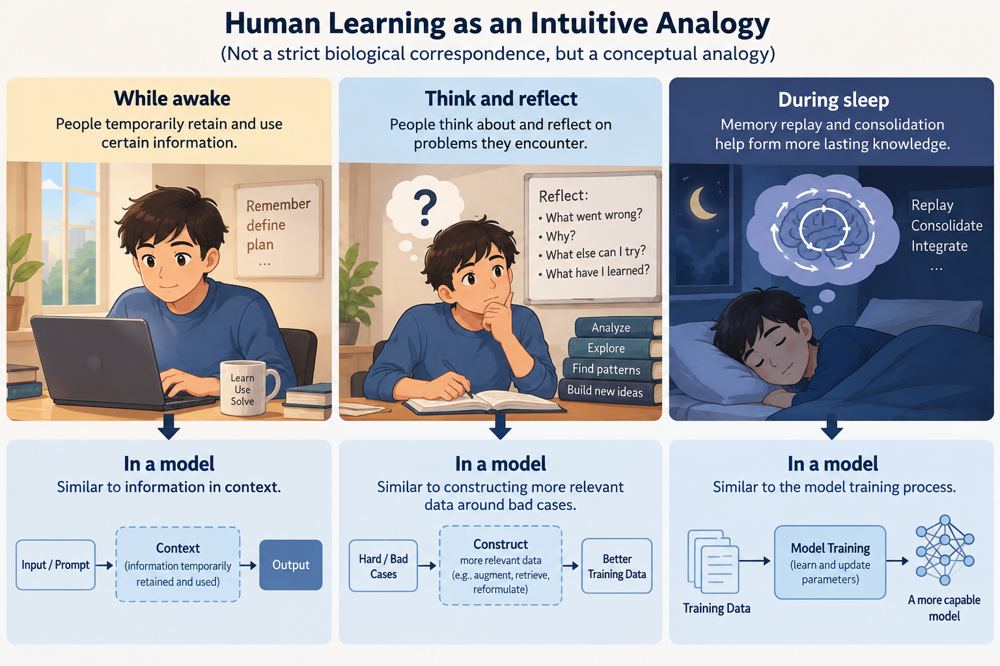
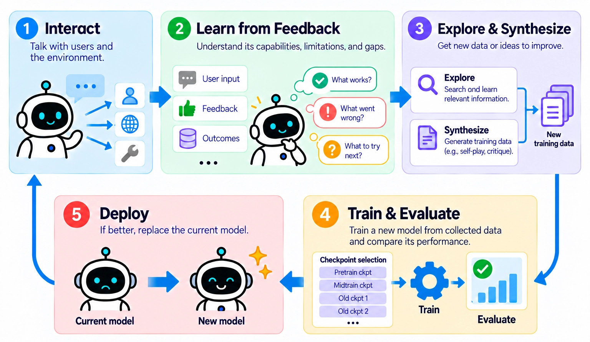
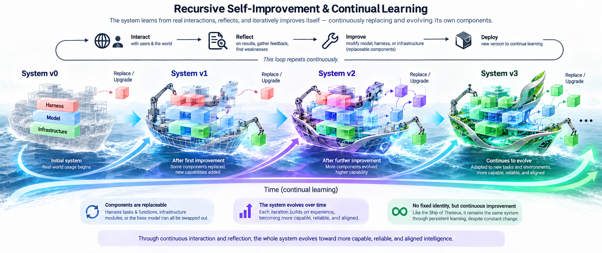

RSI-Dojo: Training LLM Agents to Automate LLM Post-Training
Team: Shuzheng Gao, Zhaojian Yu, Penghao Yin, Yuling Shi, Kai Cai, Shilin He, and Michael R. Lyu
Affiliations: The Chinese University of Hong Kong, ByteDance, Tsinghua University, Shanghai Jiao Tong University
Date: October 9, 2026


1. Introduction
As LLM agents are increasingly used for complex, long-horizon tasks, using AI systems to improve AI systems has become a key step toward recursive self-improvement (RSI). Recent work has evaluated agents on designing reinforcement-learning pipelines, curating data with feedback, and automating post-training workflows. While promising, these efforts mainly optimize agents at the harness or workflow level, rather than internalizing the ability to train and improve base models.
What is still missing is a set of scalably constructible post-training task environments. Given a base model and a target benchmark, an agent with genuine post-training capability must autonomously analyze capability gaps, construct or find data, configure training, evaluate checkpoints, diagnose failures, and keep iterating until it produces a better model. Without such environments, it is difficult to systematically collect high-quality trajectories, let alone train models on the process itself.
To address this gap, we build RSI-Craft, an automatic pipeline that converts research artifacts into executable post-training environments, yielding RSI-Dojo with 281 tasks. Using frontier models, we collect complete model-training trajectories on these environments, filter them for both behavior quality and measurable improvement, and fine-tune open-weight models to obtain RSI-Dojo-9B and RSI-Dojo-35B-A3B.
2. RSI-Dojo Construction
We develop RSI-Craft, an automatic pipeline for converting research artifacts into executable post-training environments.


Finding Candidate Tasks
RSI-Craft searches recent papers from NeurIPS, ICML, ICLR, ACL, EMNLP, NAACL, and COLM, and imports additional tasks from InspectAI evaluation platform. A lightweight keyword stage identifies papers that may introduce a dataset or benchmark. An agent then checks whether each candidate contains a reusable dataset and an executable evaluation target.
Reconstructing the Environment
For every candidate, RSI-Craft locates the data, recovers the task definition and metric, installs the required dependencies, and verifies that evaluation can run successfully. It then converts the task to a unified interface that can be used by a post-training agent. To keep each task practical, datasets with fewer than 50 examples are removed and datasets with more than 300 examples are downsampled.
Keeping Tasks That Provide Useful Feedback
The remaining environments are filtered to ensure reliability and discriminability. We exclude tasks with unstable evaluations, tasks requiring unsupported specialized infrastructure, and tasks whose evaluation metrics do not meaningfully depend on the generated output. We also access the discriminability of each dataset by comparing the performance of Qwen3-4B-Base and GPT-5-mini on every task. A task is retained only when the two models differ by at least 10 percentage points. Tasks that are too easy or too difficult for both models are removed because they provide little signal for iterative improvement.
The final RSI-Dojo contains 281 executable tasks across 10 domains. General QA and Safety are the largest categories, complemented by Math and Reasoning, Science and Medicine, Finance, Sociology, Instruction Following, and other specialized domains.


3. Experiment Setup
Trajectory Collection and Model Training
We limit each rollout to five hours to save rollout cost. The retained Codex sessions are split at context-compaction boundaries, while generated reasoning summaries are excluded. Custom tool calls such as exec and wait are converted to standard tool-call representations when possible. We train Qwen3.5-9B and Qwen3.6-35B-A3B for four epochs.
Evaluation Environment
Due to hardware availability, we conducted the experiments on a less powerful GPU than the required type in the official benchmark. All agents run with Codex CLI v0.142.4 and the standard AutoTrainess reprompting strategy and skills [2]. The additional guidance used during trajectory collection is not included during evaluation. Because Codex exposes web_search as a custom tool that is unavailable to our self-hosted models, those models are evaluated without it. To ensure access to useful training data, we download the resources listed by PostTrainBench and the Hugging Face resources used in publicly released benchmark traces.
4. Experiment Results


On PostTrainBench, RSI-Dojo-9B improve from 7.72 to 16.46 (+8.74), while RSI-Dojo-35B-A3B improved from 13.08 to 29.95 (+16.87). Both models show gains across all four target base-model families. On the PostTrainBench-Lite, the improvements are also significant: from 0.56 and 5.80 to 15.71 and 53.29, respectively.
RSI-Dojo-35B-A3B achieves a score of 29.95, slightly outperforming frontier models GLM-5.2 (29.52), GPT-5.5 (27.80), and GPT-5.4 (26.21). On PostTrainBench-Lite, RSI-Dojo-35B-A3B obtains 53.29, comparable to GPT-5.5 (52.96) but lower than GLM-5.2 (56.37) and DeepSeek-V4.1-Flash (62.92).
The reliability changes are even more straightforward: RSI-Dojo-9B went from “able to complete 10/28 settings and improve the model in 1/28” to “24/28 and 15/28”; RSI-Dojo-35B-A3B went from “15/28 and 11/28” to “28/28 and 26/28.” The latter achieved 61 effective improvements over 175 iterations (34.86%), with a much lower total number of iterations than GPT-5.4 or GPT-5.5. However, GLM-5.2 and DeepSeek-V4.1-Flash are still better in terms of iteration efficiency.
5. A New Way to Continual Learning
The most immediate value of Autonomous Model Training Agents lies in accelerating the iteration cycle of model development. However, we believe that compared with merely accelerating the R&D process of a foundation-model team, the deeper significance of letting models train models themselves may lie in providing a new way to implement continual learning.
5.1 Continual Learning: Problem and Existing Approaches
Continual learning is a long-standing problem in machine learning, and it has not been solved simply because models have become more capable. The goal is for models to learn from continuously generated new data, keep improving over time, and at the same time preserve important existing capabilities. Over the past few decades, many methods have been proposed to this end, ranging from early approaches such as data replay and dynamic model architectures [3, 4] to more recent ideas such as model editing [5, 6], OPSD [7], and Test-time Training [8], all of which attempt to address this problem at different levels.
5.2 From Fixed Workflows to Dynamic, Trainable Update Decisions
However, these methods mainly rely on pre-designed algorithms or workflows to update model weights or the harness. In other words, the data used for each parameter update, the update algorithm, and the strength of the update are all determined by a computation process with a fixed amount of computation. If we view each parameter update as a mapping—that is, given the current model parameters and the current data in continual learning, we first seek an appropriate update procedure, which is then applied to obtain the next parameter state—then ideally the chosen procedure should allow the model to acquire new capabilities without forgetting. Formally, the decision of how to update can be written as , where maps the current parameters and data to an update procedure . The new parameters are then obtained by applying this procedure: .
This is not a trivial objective, and existing continual learning methods face several limitations. Taking common approaches such as model editing, OPSD, and test-time training as examples, the model is typically trained only on a single given trajectory or dataset. Merely training the model to memorize the content it has seen does not guarantee that it will retain and later utilize this information to handle related problems. Furthermore, methods such as test-time training and many learnable-memory approaches often suffer from limited update modules—for instance, only a subset of model parameters can be updated—which imposes a clear capacity bottleneck and is inconsistent with the goal of long-term continual learning.


We can revisit the successful experience of language model development. A fixed-depth Transformer is not Turing-complete and cannot perform certain complex computations or fittings under a fixed computational budget [9, 10, 14]. Consequently, early practices of training models to generate answers directly from a query encountered difficulties in fitting and generalization. The emergence of chain-of-thought and test-time scaling [11, 12, 14] enabled models to allocate varying amounts of computation according to problem difficulty: by producing longer reasoning trajectories, models can devote more computation to learning the mapping from query to answer. Similar benefits of test-time compute scaling have also been observed in agents, looped Transformers [13], and other settings.
Therefore, we believe that a key bottleneck worth exploring in continual learning is whether the decision of “how the model should be updated”—that is, the procedure that selects the update method —can itself allocate varying amounts of computation depending on the situation and can be further improved. For example, when deciding on an update, a model may choose to train directly on existing data, or first synthesize additional relevant data and then train; for problems whose causes are unclear, diagnostic experiments may be required before any update is performed. More concretely, if the goal is for the model to internalize a piece of code and later invoke its functions, the model need not merely perform next-token prediction on the code; it can also synthesize question-answer pairs that teach how to use the functions. A promising path toward this capability is to make the update decision itself model-driven and to train models to make such decisions. This does not mean abandoning existing update algorithms; rather, it allows the model to select, combine, and adapt them according to the current context.
5.3 Inspiration from Model Development and Human Learning Process
From another perspective, we can also examine how model evolution is achieved in the foundation model development process. From one generation of models to the next, progress usually does not come from simply applying a single fixed method and repeatedly adding more data for continued training. Instead, it involves selecting appropriate checkpoints and designing data synthesis and training strategies based on bad cases and capability gaps. In some urgent situations, developers may also choose to add fallback strategies on the harness side.
Human learning offers an intuitive analogy, although this does not imply a strict biological correspondence between these mechanisms:
- While awake, people temporarily retain and use certain information → similar to information in context;
- They also think about and reflect on problems they encounter → similar to constructing more relevant data around bad cases;
- Memory replay and consolidation during sleep → similar to model training process.


In this view, continual learning may not necessarily require online parameter update algorithms. If we regard the model together with its harness as a whole system, it may be sufficient for the system to periodically identify a suitable way to train on accumulated data and replace its own base model.
5.4 Toward a Closed Loop of Continual Improvement
Interestingly, some of the behaviors described above can also be observed in PostTrainBench [1]. For example, Post-Training Agents can analyze the capability gaps of the model to be trained and search for data, select suitable checkpoints for continued training, and even manually construct training data for certain bad cases—much like how humans generalize from mistakes and think through similar problems (although such behaviors are judged as hacking by PostTrainBench). When an agent has sufficiently strong model-training capabilities and can reliably evaluate candidate versions, it may be able to make its own base model as the object of optimization and replace it when appropriate, thereby forming a closed loop of continual improvement.


Furthermore, what needs to be evaluated here is not only whether performance improves on a particular task, but also whether important old capabilities are preserved and whether the new version remains capable of organizing subsequent learning. Imagine a scenario in which an agent runs continuously within a harness, constantly receives problems and feedback, and improves different modules as needed. This process could be linked together through a series of optimization tasks similar to PostTrainBench, but each round would need to inherit the previous system state and account for interactions among updates, rather than pursuing only single-round gains. In such a system, both the harness and the model can become replaceable components, while the agent can continuously replace and iterate on itself while “in flight.” This, in our view, is the deeper value that Autonomous Post-Training Agents may bring to continual learning.


References
- Ben Rank et al. PostTrainBench: Can LLM Agents Automate LLM Post-Training? 2026.
- Zhaojian Yu et al. AutoTrainess: Teaching Language Models to Improve Language Models Autonomously. 2026.
- David Lopez-Paz and Marc’Aurelio Ranzato. Gradient Episodic Memory for Continual Learning. NeurIPS 2017.
- Andrei A. Rusu et al. Progressive Neural Networks. arXiv 2016.
- Kevin Meng et al. Locating and Editing Factual Associations in GPT. NeurIPS 2022.
- Kevin Meng et al. Mass-Editing Memory in a Transformer. ICLR 2023.
- Idan Shenfeld et al. Self-Distillation Enables Continual Learning. arXiv:2601.19897, 2026.
- Yu Sun et al. Test-Time Training with Self-Supervision for Generalization under Distribution Shifts. ICML 2020.
- Jorge Pérez, Pablo Barceló, and Javier Marinkovic. On the Turing Completeness of Modern Neural Network Architectures. ICLR 2019.
- William Merrill and Ashish Sabharwal. The Parallelism Tradeoff: Limitations of Log-Precision Transformers. TACL 2023.
- Jason Wei et al. Chain-of-Thought Prompting Elicits Reasoning in Large Language Models. NeurIPS 2022.
- Charlie Snell et al. Scaling LLM Test-Time Compute Optimally can be More Effective than Scaling Model Parameters. arXiv 2024.
- Ying Fan et al. Looped Transformers as Programmable Computers. ICML 2023.
- Guhao Feng et al. Towards Revealing the Mystery behind Chain of Thought: A Theoretical Perspective. NeurIPS 2023.